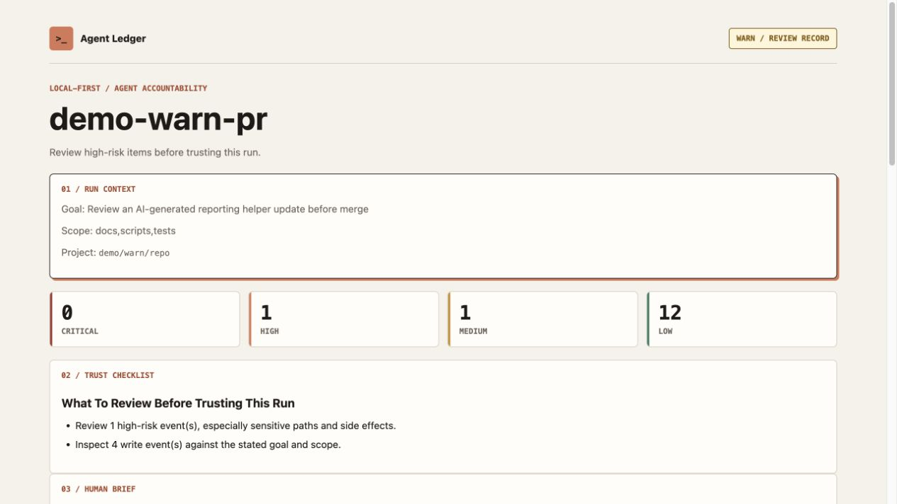

Scope
Define outcome, allowed paths, checks, and boundaries before editing.
Local-first / open source / Codex + Claude Code
Make your coding agent check its own work.
Agent Ledger gives coding agents a bounded loop for scope, execution, verification, finding review, and safe correction. You get a more disciplined run and a clear record of what happened.
npx skills add sprintagency-it/agent-ledger --skill agent-ledger --yes --copyREAL OUTPUT
The agent reads the same findings before handoff, classifies them, corrects eligible issues, and renders the final state again.

01 / WORKFLOW
Agent Ledger changes how the agent executes the task, not just how the result is formatted afterward.
Define outcome, allowed paths, checks, and boundaries before editing.
Perform the task while recording practical command and file evidence.
Run tests, lint, smoke checks, or the closest available proof.
Render machine-readable findings and a PASS, WARN, or BLOCK status.
Classify findings and fix safe true positives inside declared scope.
Hand off what changed, what passed, and what still needs a human.
02 / DECISION ROUTING
Deterministic findings route attention. The agent still has to classify context before it fixes or dismisses anything.
No critical or high signals. Verification and normal code review still apply.
View PASS replayA high signal needs evidence-based classification before trust or merge.
View WARN replayA critical signal crosses a boundary that should not be fixed blindly.
View BLOCK replay03 / START
Install from the skills directory in your repository root. The skill includes its runtime and prepares the ignored .agent-ledger/ workspace on first use.
# 1. Install in the current repository
npx skills add sprintagency-it/agent-ledger --skill agent-ledger --yes --copy
# 2. In Codex
Use $agent-ledger to fix the signup validation bug.
# Or in Claude Code
/agent-ledger Fix the signup validation bug.
# 3. Receive
PASS / WARN / BLOCK
executive-summary.md
review.json
fix-brief.md
replay.html04 / TWO READERS
review.json and fix-brief.md turn the end of a task into structured input for classification, correction, or supervisor-agent aggregation.
executive-summary.md and replay.html show scope, evidence, findings, and unresolved decisions without reopening the original chat.
PUBLIC BETA / V0.3.3
Agent Ledger is free, local-first, and intentionally narrow. The beta asks one question: does the loop catch or clarify something useful before handoff?